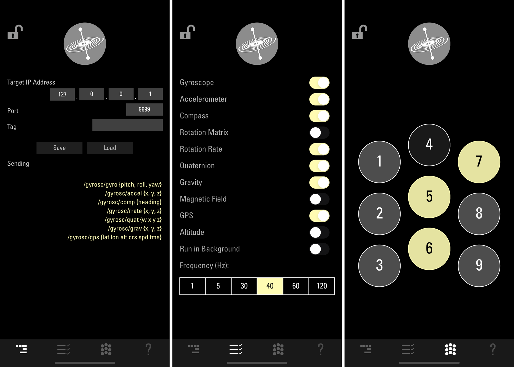
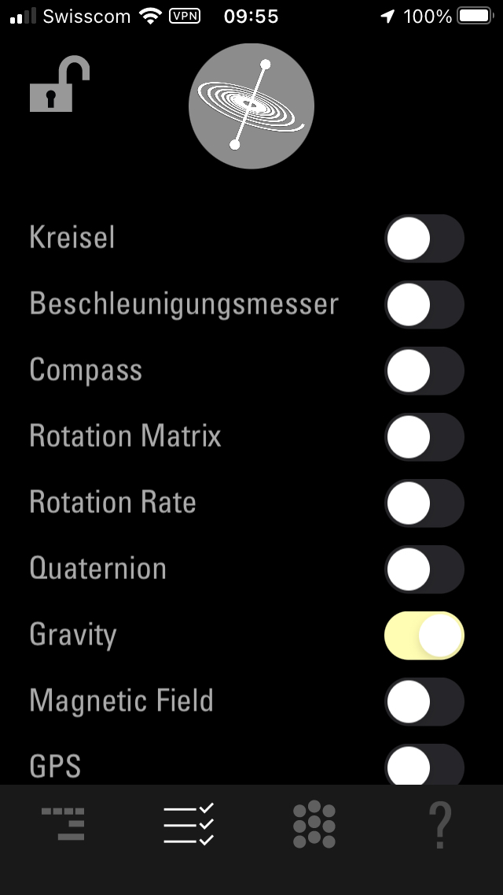
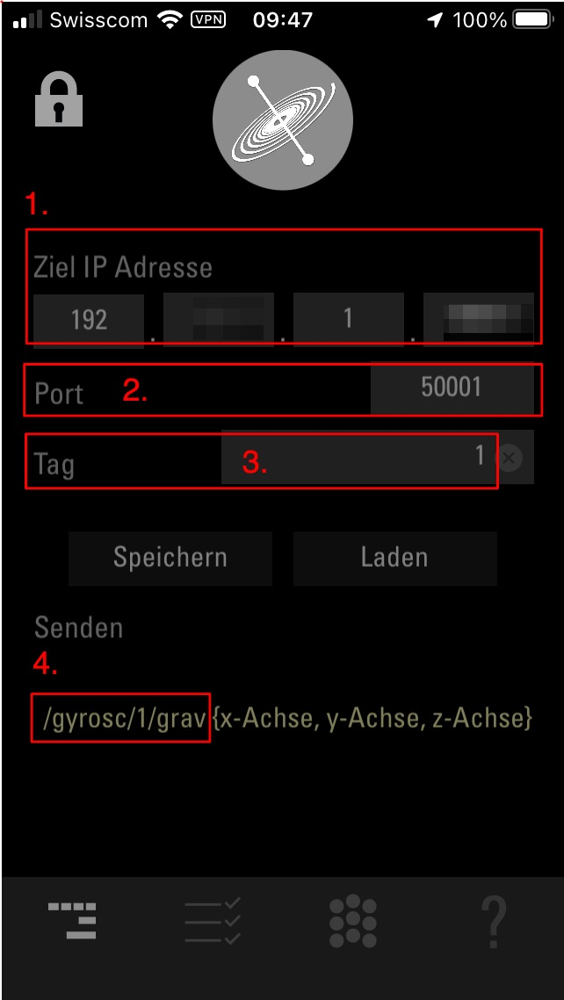
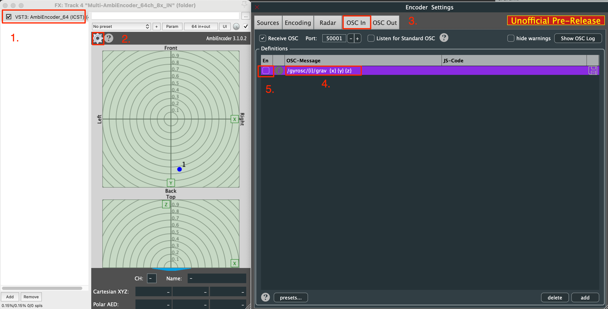
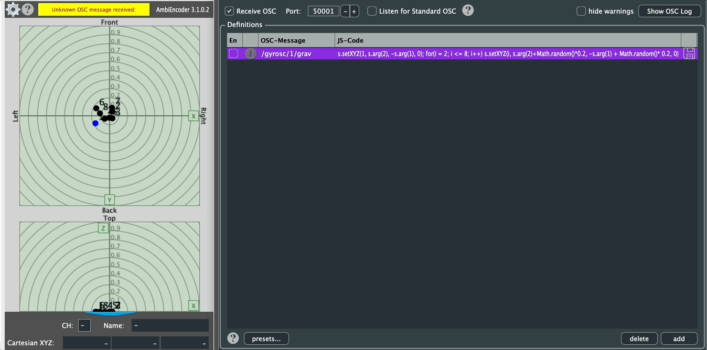

Institute for Computer Music and Sound Technology / (ICST) Zurich University of the Arts
ICST MultiEncoder and iOS GyrOSC.app
GyrOSC is a lightweight utility that sends motion sensor data (from your iPhone, iPod Touch, or iPad) over a local wireless network to any OSC-compatible host application. It allows you to control live audio or video applications using your device’s built-in gyroscope, accelerometer, compass, and altimeter.

The following GIF demonstrates how the ICST AmbiEncoder receives OSC data from the GyrOSC app.

How it works:
This tutorial is a short step-by-step guide on how to use the iOS app ‘GyrOSC’ with the ICST Ambisonics Encoder.
How It Works:
This tutorial provides a step-by-step guide on using the iOS app GyrOSC with the ICST Ambisonics Encoder.
Setting Up the GyrOSC App:
- Download the GyrOSC app.
- Configure the app as follows:
- Enable Gravity (disable all other sensors).

OSC Configuration in GyrOSC App:
- Enter the IP address of your machine in field (1).
- The default port number for the ICST Ambisonics Encoder is 50001 (field 2).
- Choose the index (source-number) for the plugin in field (3).
- Field (4) shows the OSC message sent by GyrOSC.

The GyrOSC app will send the ‘Gravity’ data via OSC (port 50001) to the ICST MultiEncoder.
Setting Up the ICST Ambisonics Encoder Plugin:

-
Open the ICST AmbiEncoder_64 plugin.
-
Access the Encoder Settings.
-
Open the OSC IN section and enable OSC-IN (port: 50001).
-
Double-click in the OSC-Message field and enter:
/gyrosc/{i}/grav {x} {y} {z} -
Enable the plugin by selecting en.
-
Move your iPhone to generate motion data.
Inspirations:
OSC-Swarm
OSC-Message:
/gyrosc/1/grav
JS-Code:
s.setXYZ(1, s.arg(2), -s.arg(1), 0); for(i = 2; i <= 8; i++) s.setXYZ(i, s.arg(2)+Math.random()*0.2, -s.arg(1) + Math.random()* 0.2, 0)

©2025 ICST